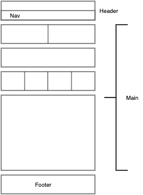
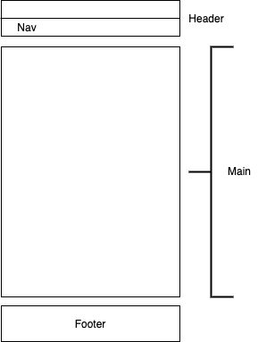
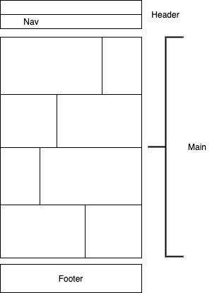
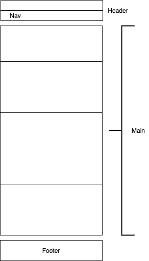

O site que vai ser criado e desenvolvido para o projeto final da unidade curricular está assente em dois principais objetivos:
A) O site irá incorporar uma vertente didática, no sentido em que estará assente na partilha de informação acerca do mundo animal, permitindo a quem a está a utilizar
entender e adquirir conhecimento sobre a fauna à sua volta.
B) O site terá uma segunda vertente, que passa por incorporar um fator de
jogabilidade, oferecendo ao utilizador uma experiência desafiadora, que consiste na
interação e competição com outros utilizadores, em que o objetivo é "capturar" o
número máximo de seres animais possível.
A tarefa principal possível ao utilizar este site é, aquando da presença de um animal,
o utilizador pode tirar-lhe uma fotografia e obter as informações relacionadas com o
mesmo. Assim que o utilizador encontrar um animal e este for identificado, o mesmo passa diretamente a incorporar a sua coleção (POKEDEX).
De seguida iremos apresentar o que usamos para o desenvimento do website:
Foram usadas media queries que adaptam o layout para telemovel e PC consoante o tamanho da janela do browser.
@media only screen and (max-width: 1024px) {
.foto {
grid-column-start: 1;
grid-column-end: 6;
grid-row-start: 2;
grid-row-end: 3;
box-sizing: border-box;
}
Animações
Foram feitas animações usando keyframes que permitem a deslocação dos ícones dos animais
@keyframes girafa {
from {
left: 0%;
top: 0%;
}
to {
left: 78%;
top: 45%;
}
}
Layouts

Layout da página principal para todos os devices.

Layout da página principal para todos os devices.

Layout da página de cada classe para pc e tablet.

Layout da página de cada classe para telemóvel.